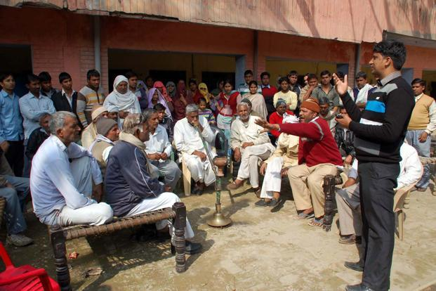

Judicial Local Government
Role of Government
The role of local government is to make the same rule that is pass the same rule which is made by the state and their are two types of local government Rural and Urban, Rural areas are not well developed areas which have panchayats and the Urban places are developed and have municipalities.
Influences of the Government on citizens life
If they do not take any one rule seriously then the city or the village can be in highly risk and the people of the cities or the villages can also be in great danger they do not have judiciary legislative and executive they are just one.
